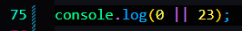

Avoiding the problem of probabal problems like this:


In ES6 2020


The nullish coalescing operator works with the idea or with the concept of the nullish values instead of falsy values
Nullish values contain: null and undefined (NOT 0 or '')
So only the Nullish Values will short-circuit.